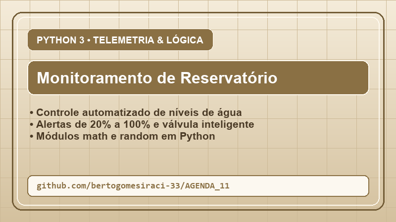

Desenvolvimento de Sistemas
Portfólio acadêmico e profissionalDesenvolvimento de Sistemas • P&D Operacional
Sou profissional atuante na área de Pesquisa e Desenvolvimento Operacional e estudante de Desenvolvimento de Sistemas na ETEC. Tenho foco em resolver problemas através da tecnologia, automação de tarefas, interfaces web responsivas com HTML, CSS e Bootstrap e programação em Python.
São Paulo/SP
Desenvolvimento Web, Python e Automação
Administração, Logística e Desenvolvimento de Sistemas
Criar interfaces modernas, automações e soluções digitais
Minha base sólida unindo Gestão Empresarial, Logística e Desenvolvimento de Sistemas.
Formação técnica focada em programação web (HTML5, CSS3, Flexbox, Bootstrap), lógica de programação e algoritmos em Python, modelagem de banco de dados (MER/DER) e projetos no GitHub.
Formação superior voltada ao planejamento de operações, cadeia de suprimentos, controle de processos logísticos, indicadores operacionais e eficiência no fluxo de informações.
Formação superior em gestão estratégica, administração de projetos, análise de resultados, tomada de decisão e melhoria contínua de processos organizacionais.
Projetos reais publicados no meu GitHub que representam minha evolução na área de desenvolvimento.

Página criada com HTML5, CSS3, Reset CSS e Flexbox em 3 colunas responsivas, publicada no GitHub Pages.
Ver projeto
Aplicações desenvolvidas em Python: Monitoramento de Reservatório de Água (Agenda 11) e Calculadora de Consumo Elétrico.
Ver projeto
Página web desenvolvida com HTML5 e publicada no GitHub Pages, organizando atalhos e descrições dos principais portais web.
Ver projeto
Aplicação web Single Page Application (SPA) em HTML5, CSS3 e JavaScript puro com questões inéditas para estudantes.
Ver projeto
Coleção de scripts em Python para cálculo de consumo elétrico (kWh), consumo de água, pesquisa de opinião e descontos.
Ver projeto
Projeto front-end moderno estruturado com React, TypeScript e Vite voltado à área de nutrição e bem-estar.
Ver projetoAberta a oportunidades, projetos e conexões na área de tecnologia e desenvolvimento.
Estou em constante aprendizado e disponível para trocar ideias, compartilhar projetos e construir novas conexões profissionais.
Localização: São Paulo/SP